Translation & Localization
English to Canadian French for corporate, digital and specialized content, with terminology and audience adaptation built in.
I help global brands deliver accurate, coherent and context-aware French content across technical documentation, digital products, interfaces, games and institutional communications.
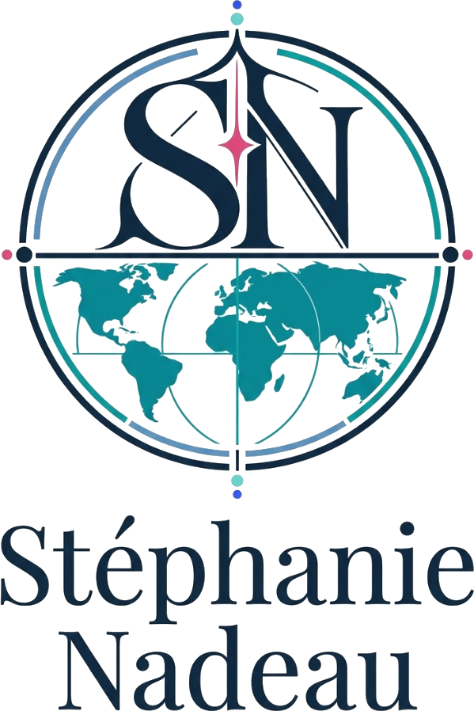
From a single high-stakes document to a multi-batch localization workflow, I adapt the level of linguistic and contextual control to the work.
English to Canadian French for corporate, digital and specialized content, with terminology and audience adaptation built in.
Interfaces, interactive journeys, strings, menus and product content checked for clarity, length and continuity.
Manuals and documentation where component relationships, procedures and nomenclature must remain exact.
Machine translation post-editing, comparative review, proofreading and in-context linguistic quality assurance.
Glossaries, translation memories, QA checks, brand rules and repeatable controls for complex content environments.
Creative adaptation, copywriting, SEO content, subtitling and text that carries intent across markets.
A representative selection of technical, institutional, financial, editorial, digital and gaming work. Volumes are shown only where documented.
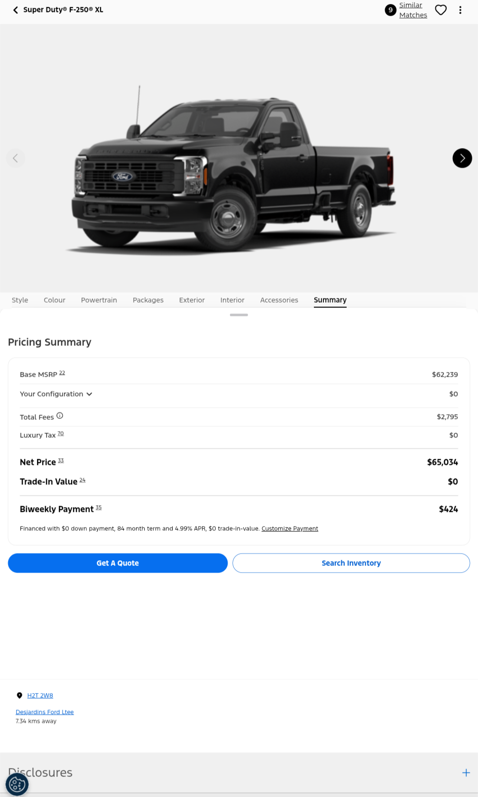
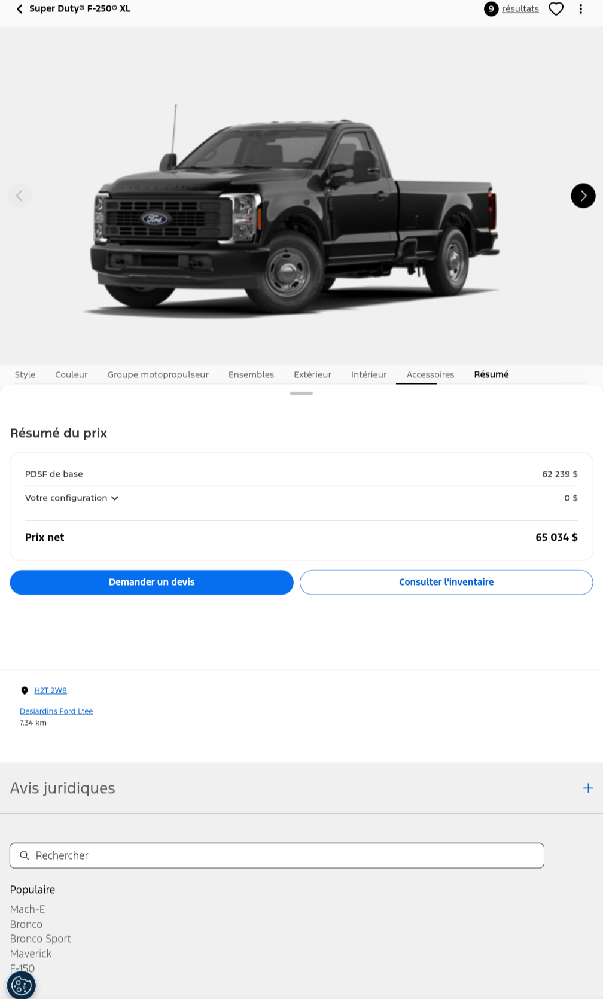
Localizing an interactive vehicle configuration journey across filters, model pages, pricing and legal disclosures.
Coordinated terminology and continuity across multiple interface states and batches.
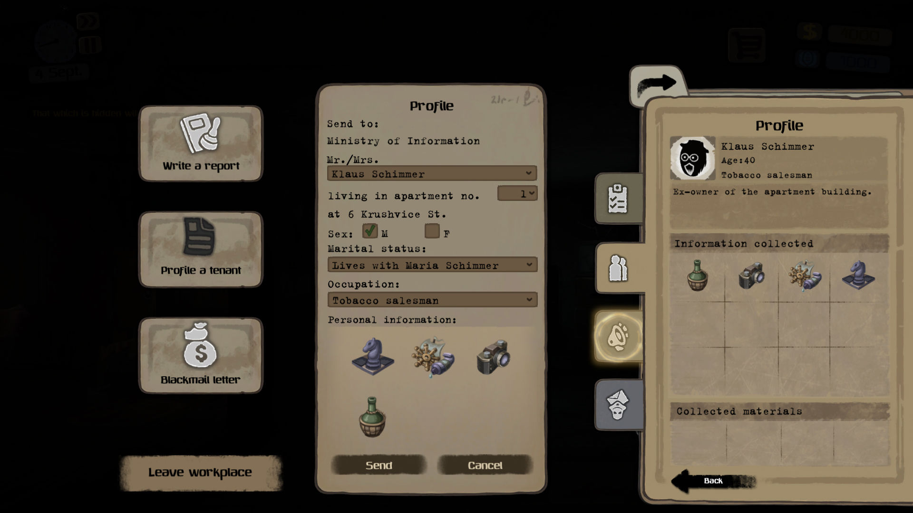
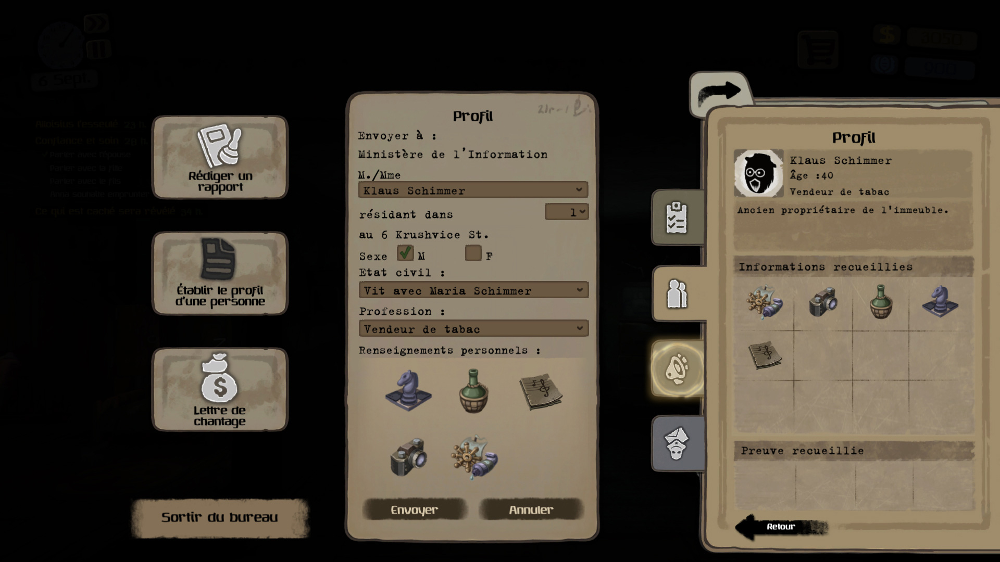
Localizing a PC game and testing dialogue, menus, messages and choices in their actual environment.
Contextual checks reveal issues that isolated strings cannot: truncation, tone, flow and coherence.
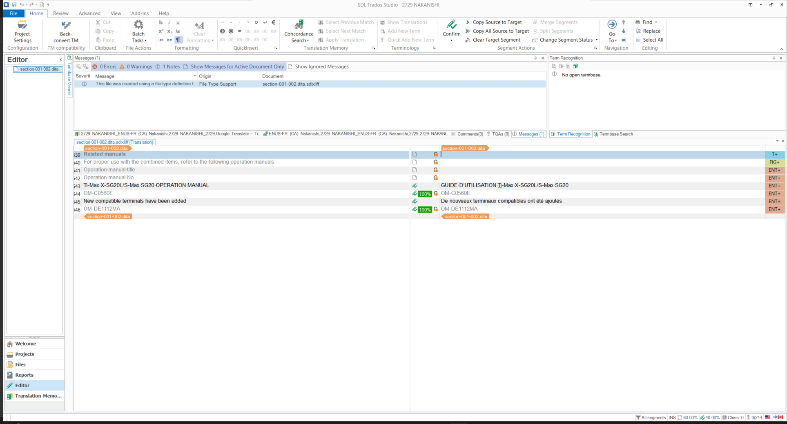
Specialized documentation for dental and oral surgery instruments, with terminology kept stable across tables, legends and instructions.
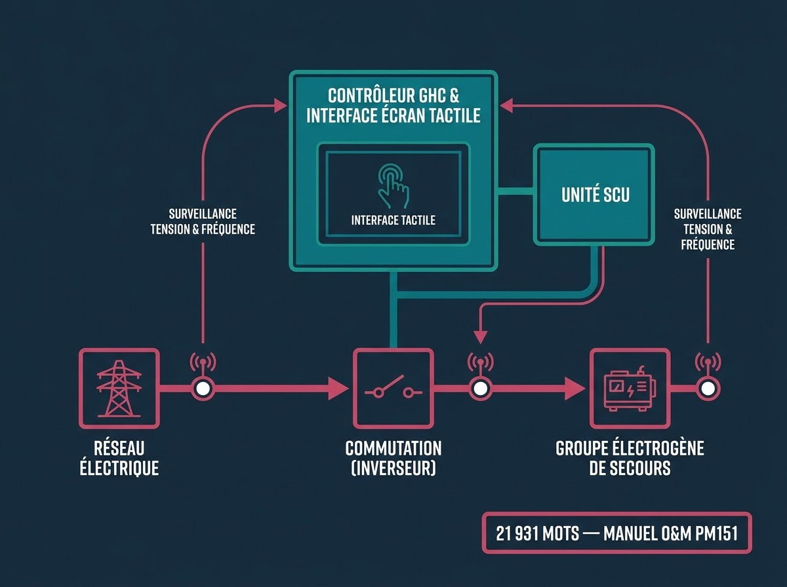
Translation of the TSC 900 operations and maintenance manual, preserving the logic between the GHC, SCU and transfer sequences.
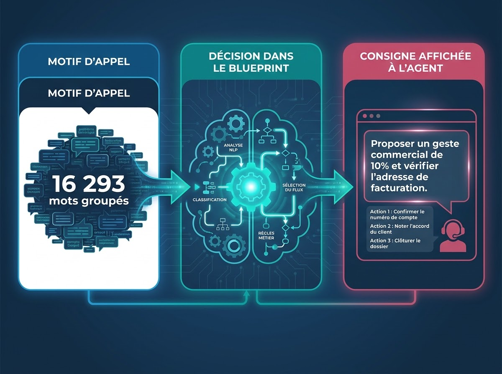
Post-editing operational Visio workflows for call-centre agents, with terminology, character limits and source-target controls.
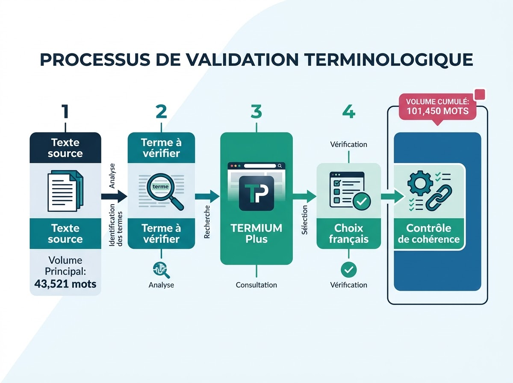
A documented cluster of institutional mandates requiring Canadian French consistency and terminology research through TERMIUM Plus.
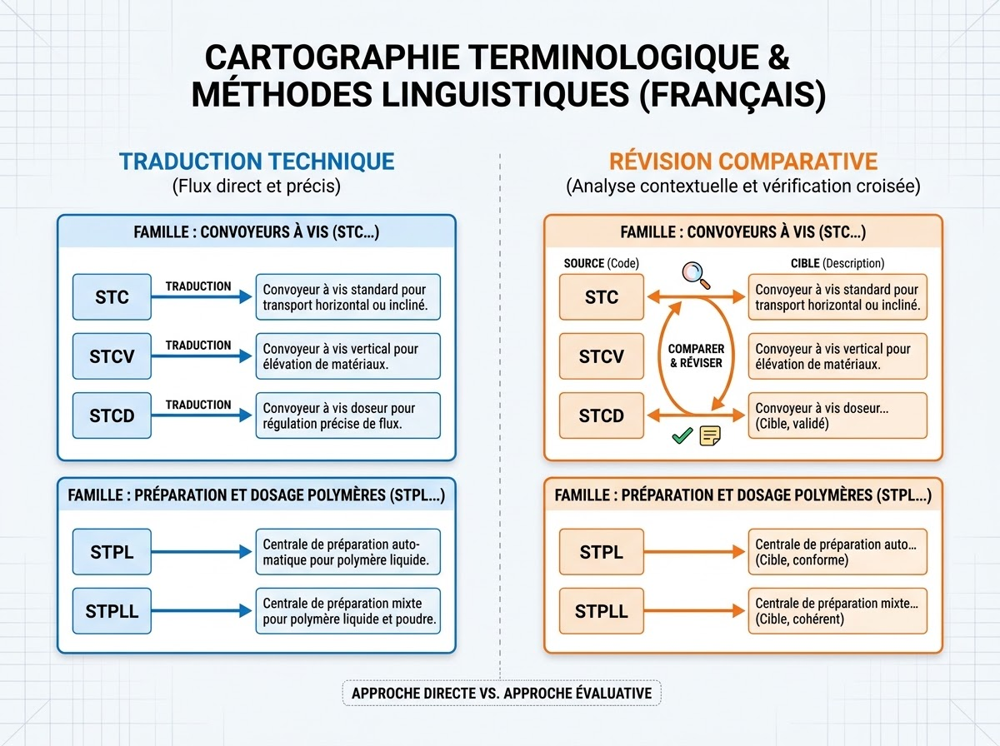
Technical translation and comparative editing across equipment families, product codes and industrial functions.
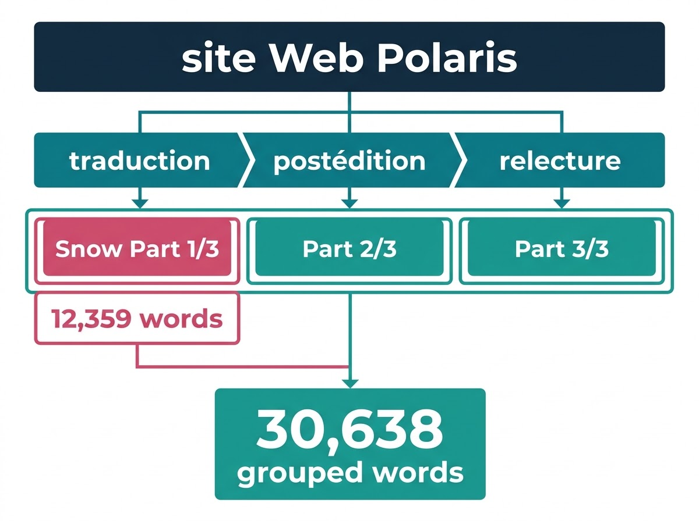
Translation, full post-editing and proofreading for Web content delivered in multiple related batches.
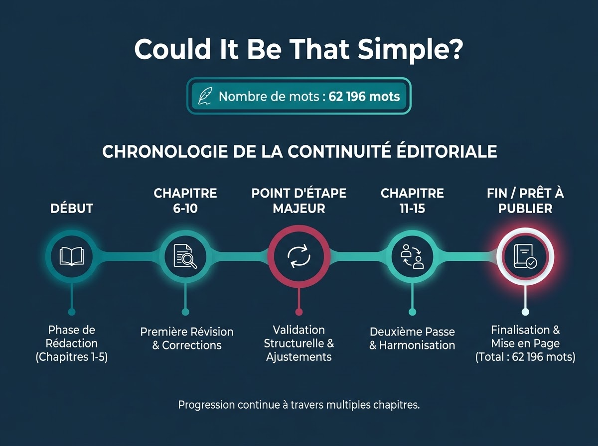
Maintaining voice and terminology across a complete 62,196-word book intended for church members.
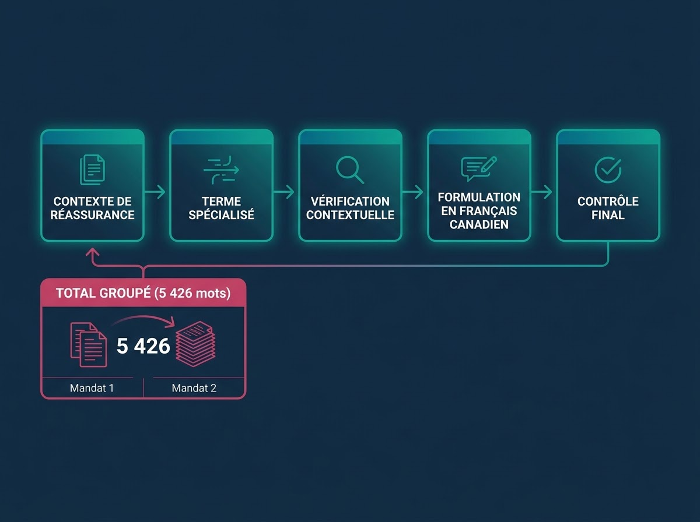
Two related mandates requiring stable terminology in a specialized reinsurance context.
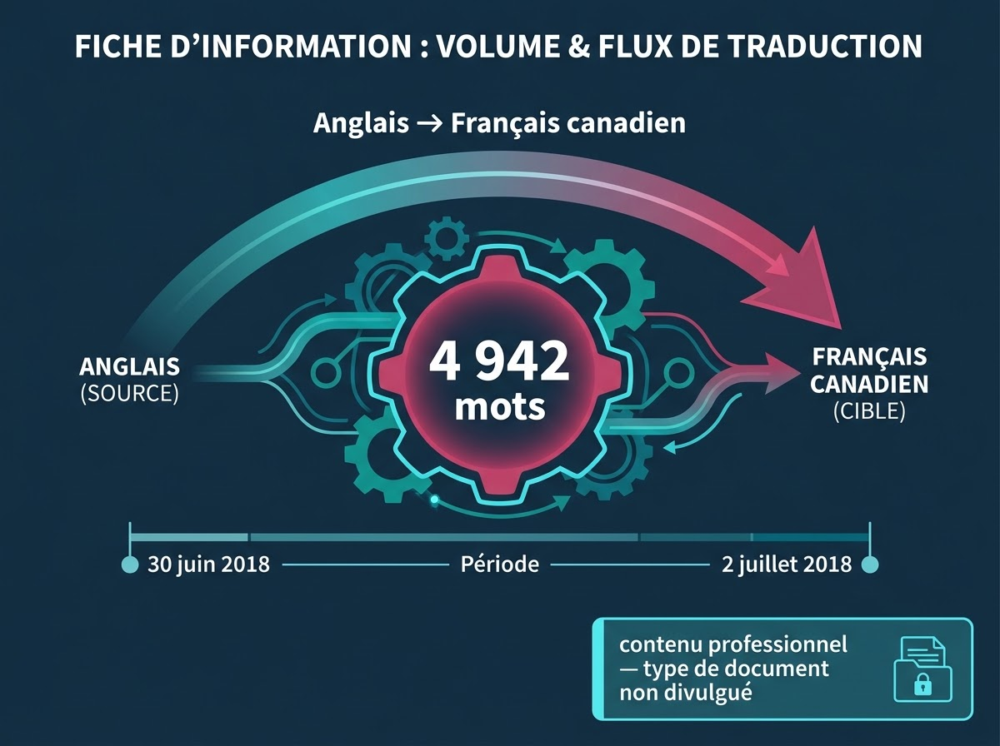
A fact-based professional review mandate. The type of source document remains undisclosed.
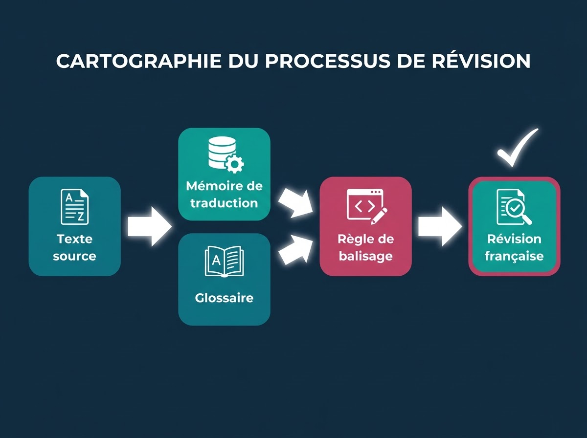
Proofreading informed by the project memory, glossary and the rule that the brand name remain unchanged.
Identify the audience, format, workflow, constraints and real use of the content.
Build decisions around glossaries, memories, style guides, product relationships and context.
Review interfaces, games, flows and structured content where the words actually operate.
Check source-target consistency, forbidden characters, limits, brand rules and risk points.
Since 2013, I have worked across technical, digital, institutional, financial, editorial and gaming content. My practice combines linguistic precision with the technical fluency needed to work inside modern localization environments.
Comfortable across CAT tools, terminology systems, QA workflows, document automation and Web technologies.
“She has a genuine gift for writing, capturing the essence of a text while respecting its core message. She consistently meets editorial requirements, and production schedules and deadlines hold no secrets for her.”
“She is officially recognized as one of our most trusted proofreaders. We rely on her to screen and evaluate the final work of other French Canadian linguists for our team.”
“Her professionalism, precise choice of words, and perfect understanding of our expectations make her a true specialist. I recommend her without hesitation.”
2026 rates in CAD. Final pricing depends on volume, content type, resources, context and timeline.
A $45 CAD minimum applies to micro-projects. Rush deliveries may carry a 25–50% surcharge. Volume discounts apply to eligible translation-memory matches.
Send the context, format, language pair, approximate volume and timeline. I will help identify the right level of linguistic and contextual control.